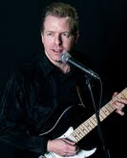
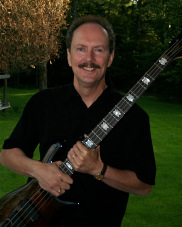
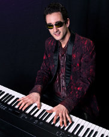

BAND
Featuring a dynamic male and female vocal team, wicked 3-piece horn section, and super-tight rhythm
section, 8Track Mind is an 8-piece pop, rock, and groove band that plays the best in popular dance and
party music - the 70s, 80s, and a little bit either side - with the level of professionalism you'd expect to find
in Montreal or New York. But this band is from Fredericton, New Brunswick, and they're the only one In
eastern Canada with a songlist that includes material by Paul McCartney, Stevie Wonder, Chicago, the
Doobie Brothers, Sade, Donna Summer, Lighthouse, Heart, the Bee Gees, and so much more.
Yes, 8Track Mind delivers great music that everyone knows and loves, and it's propelled by enough energy to
light up any dance floor. As so many have said and the constant calls for encores confirm, 8Track Mind
may very well be the best pop/rock party and dance band east of Montreal.
Sherri Chenard/Vocals, Percussion
One of the most passionate and charismatic vocalists on the East Coast music scene, Sherri Chenard energizes 8Track Mind with her nifty dance moves, wild sense of style, and strong performances of classic tunes by Donna Summer, Chicago, Kiki Dee, Queen, Steely Dan, Heart, and Fleetwood Mac. With past credits including the Downtown Blues Band, Black Cherry, and Pet Rock, with 8Track Mind Sherri is a dynamo.
Dan Doucet/Vocals, Guitars, Percussion
His powerful vocals, tight harmonizing, and deft acoustic and electric guitar playing make Dan Doucet a triple threat in a band already packed with talent. With a background in classic pop and rock and past bands including Big Date, Next Door Neighbours, Separate Ways, and Bedrock, Dan brings a versatility to 8Track Mind that sees him singing lead on tunes by Lighthouse, Aerosmith, Robert Palmer, and The Commodores.
John Rosengren/Bass
John is a long time fixture on Fredericton's music scene with over 40 years experience in various bands. His diverse musical influences include rock, R&B, funk, and blues which enable him to generate the grooves necessary to support the 8Track Mind's varied musical styles.
Wayne Blanchard/Drums
With extensive experience including living and playing in Germany and the UK, Wayne is well
known for his years of drumming with Fredericton-based bands The High Diving Act, The
Slokkum Sistirs, and Fredericton's legendary Redeye. With his vast knowledge of pop and rock
music he delivers syncopated grooves and the sort of subtleties that enable this
Eddie Oldfield/Keyboards, Vocals
With a music degree from McGill University, Eddie is a multi-instrumentalist whose keyboards shine on tunes including the boogie-woogie of Burton Cummings' 'My Own Way to Rock', Paul McCartney's 'Jet', and the incessant groove pumping of Toto's 'Hold The Line'. With 8Track Mind Eddie's quiet intellect, sheer enthusiasm, and colourful wardrobe never cease to impress, while his versatile keyboard playing packs a powerful punch.
Adam Johnson/Trumpet, Flugelhorn, Vocals, Percussion
Responsible for arranging 8Track Mind horn parts, Adam provides the top end of the band's
sound with his fluid trumpet and flugelhorn lines.
Glen Clarke/Trombone, Vocals, Percussion, Keyboards
Previously with the famed RCR Band, Glen is a talented arranger and multi-instrumentalist who also serves as 8Track Mind's Musical Director. In addition to playing trombone and singing spot-on harmonies, Glen arranges the group's multi-part vocals and provides creative horn charts. Onstage, his trombone adds a richness to the horn section that gives songs by Chicago, Lighthouse and Stevie Wonder the complex rich harmonic energy and colour they deserve.
Tom Richards/Saxophones, Percussion
Tom is a Fredericton-based musician proficient in many styles from jazz and rock to traditional and maritime music. He studied jazz performance at St Francis Xavier University. When not playing with 8Track Mind and other bands, he teaches band at local schools and private music lessons. He often travels through time performing theatre and music at Kings Landing Historical Settlement.